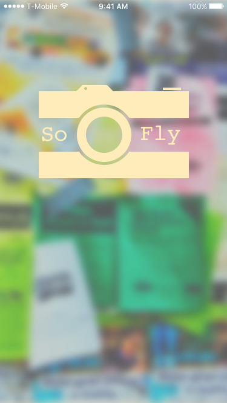
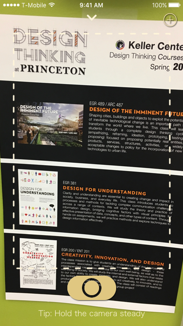
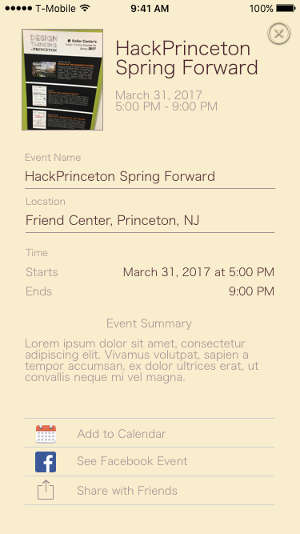
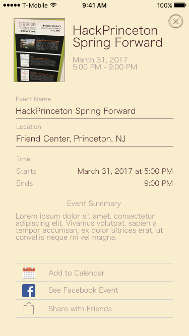

< Return to all blogs
HackPrinceton 2017: SoFly — An iOS App to Scan Flyers on Campus
An app to digitize flyers and generate calendar events. It won runner app for Best App for Students at Princeton's hackathon!
Introduction
Earlier in April, a friend and I participated in HackPrinceton, Princeton University’s semi-annual hackathon that brings students from all around the country together for 36 hours. We built SoFly — an iOS app that scans flyers and lets the user share the event, create a calendar event, find the Facebook event, etc. The judges really liked it and it won runner up for the best app for Princeton Students!
I was responsible for the design, frontend, and implementing the OCR (Optical Character Recognition) processing. My partner dealt with the natural language processing to extract the event name, date, etc. from the raw text. I used Sketch to design the UX and Xcode/Swift 3 to code the frontend. We used Tesseract — Google’s OCR engine.
Check out the Devpost submission here.
Video Demo
Motivation
The motivation for our application came when we realized how much our college uses flyers to advertise events. From dance recitals, to scientific talks, events are neatly summarized and hung on campus in visible areas. A huge part of our sense of community comes from these events, and as excursions into Princeton township have shown us, events planned in non-centralized communities rely on flyers and other written media to communicate activities to others. Both of us have fond memories attending community events growing up, and we think (through some surveying of our student body) that a cause of decreased attendance at such events is due to a few factors.
- People forget. Its not a flyer they can always take with them, and so what they think is instantaneously exciting soon fades from their memory.
- It is not digital – in a world where everything else is.
Design
The primary concerns for the design were largely speed and usability. Flyers are already something that people ignore because it takes too long to absorb and memorize the information. We had to create an experience that would be as painless as if you just glanced at the flyer and faster than it would take to add the event to your calendar manually. This goal made the design largely a user-experience challenge as opposed to simply making it look good. It was a lot of fun playing around with various user flows and animations.
I think the finished product ultimately hit it on both the usability and aesthetic fronts. I put in a lot of effort into the animations (see the video above). Little things from the camera flash on the splash screen to the “scanning” loading animation took all my skill and creativity as an iOS developer to implement. It was really exciting when the finished product looked polished after only 36 hours!
Screenshots


 

Implementation
The application uses Optical Character Recognition techniques (along with Otsu’s method to preprocess a picture, and an exposure and alignment adjustment algorithm) to extract a dump of recognized text. This text is error prone, and quite messy, and so we use canonical Natural Language Processing algorithms to tokenize the text, and “learn” which terms are important. The Machine Learning component in this project involves a Naive Bayesian Classifier, which can categorize and weight these terms for (as of now) internal use. This compared with a “loose NFA” implementation (we coined the term to describe an overly general regex with multiple matches) whose matches were processed using an algorithm that determined the most probable match. From the flyers we extract date, time, location, and our best guess at the title of the text. We made a design choice to limit the time our OCR took, which leads to worse holistic text recognition, but still allows us to extract theses fields using our NLP methods.
Challenges
There were a lot of challenges that we had to work through on this project. Optical Character Recognition, Machine Learning, and Natural Language Processing are all open fields of research, and our project drew on all of them. Not only was the debugging process brutal, but the implementation was not as seamless as we would’ve liked.
Because Tesseract is not intended for mobile use and not built for images (it is used by Google to scan Google Books/PDFs — ie. “clean” documents), we ran into a lot of issues. In retrospect, Tesseract was not a great choice for an OCR library, but because of our time constraint, we didn’t have enough time or people to create an AWS server. Tesseract’s one huge advantage is that it works completely offline. For our next version, we are hoping to build an AWS server to access more powerful OCR services and only use Tesseract if the user doesn’t have an Internet connection.
Another challenge we ran into was in the pre-processing of an image. I hadn’t worked with UIImages (Swift’s image data type) all that much before this project and it was really difficult manipulating images so that Tesseract could produce the best and most accurate results. The most helpful pre-processing ultimately ended up being the binary translation of the image. The algorithm would turn the image into black/white pixels based on the amount of color around each pixel. This technique worked really well because it allowed the text to be more readable against the background.
Other problems we encountered include extracting the name of the event, extracting the organization involved, reading text against a busy background, and much more. We’re hoping that a lot of these issues are solved when we use a stronger OCR service.
Conclusion
All in all, it was a very successful hackathon! As we were both freshman, we were definitley the underdog in this hackathon and we made a name for ourselves! Some professors became interested in our project and want us to build it out so that students can actually use it! We will likely spend the summer completing the project so that come fall, it will be widely used on campus! It was really exciting and well worth the lack of sleep. Check out the Devpost submission here!